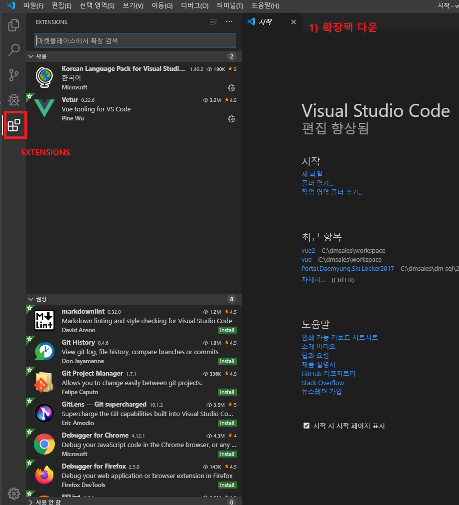
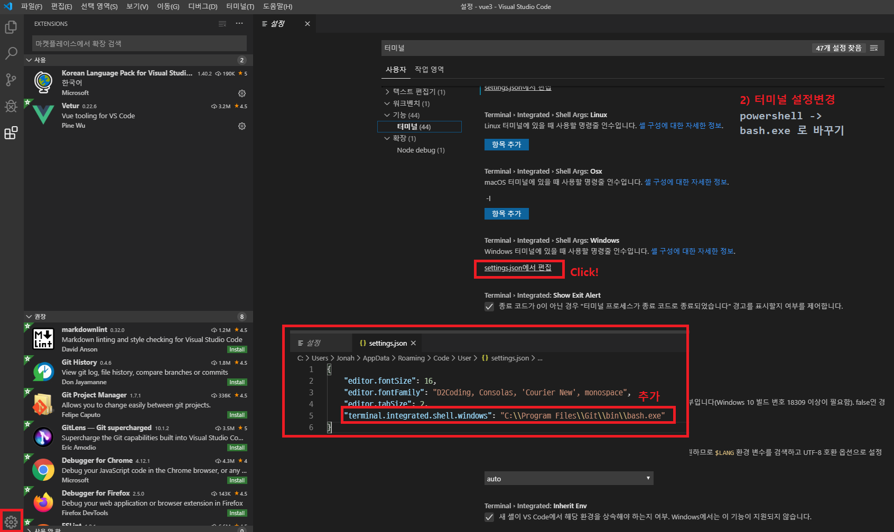

설정 > 터미널 설정 > powershell -> bash.exe 로 바꾸기
ㄴ설정 - setting.json 에서 어쩌고 - terminal.integrated.shell.windows

ㄴ실행은 상단 바 "새 터미널"
-vue cli 프로젝트 만들기
1) npm init : 노드 패키지를 만든다
ㄴ앤트리 포인트 : 노드 프로젝트가 처음 구동될 때 어떤 패키지를 실행시킬 것이냐
2) npm install -g @vue/cli : create하기 전에 - 라이브러리 집어넣는 명령어
ㄴ"dependencies": {
"vue": "^2.6.10"
}
: 의존성 주입
: @vue/cli : npm에서 관리하는 패키지 이름
(빌드, 웹팩 생략)
3) vue create : vue create 는 vue cli를 이용한 탬플릿 생성하는 것
-세부설정
(*) Babel : es6이상의 것들을 es5버전으로 변환시켜줌
( ) TypeScript :es6 자바스크립트 업그레이드 버전(일종의 라이브러리)
( ) Progressive Web App (PWA) Support : 사용자 인터페이스 관련
( ) Router : 뷰 라우터
( ) Vuex : 부모-자식 컴포넌트 간 데이터 흐름을 한눈에 보기 어려움 / 데이터 상태 관리(라이브러리) / 필요한 데이터를 뷰엑스에 등록해놓고 꺼내쓰는 식(데이터베이스 같음)
( ) CSS Pre-processors (scss-브라우저에서 바로 읽지 못하기 때문에 css에서 변환과정 거침, sass..) : scss,sass등 변환해주는 프로그램들
(*) Linter / Formatter : (esLint가 linter의 종류) linter : 꼭 지키지 않아도 실행되는 개발 문법에 대한 룰을 정함(코드 컨밴션 툴)
( ) Unit Testing :테스트 라이브러리
( ) E2E Testing :테스트 라이브러리
-linter : prittier - save
-모든 옵션들은 각각의 라이브러리를 가지고 있음
ㄴdedicated - 각각
ㄴpackage.json - 여기 다 넣음
# package.json
"dependencies": { //개발할 때 필요한 라이브러리
"core-js": "^3.3.2",
"vue": "^2.6.10"
},
"devDependencies": { //개발할 때 필요하지 않은 라이브러리
"@vue/cli-plugin-babel": "^4.0.0",
"@vue/cli-plugin-eslint": "^4.0.0",
"@vue/cli-service": "^4.0.0",
"@vue/eslint-config-prettier": "^5.0.0",
"babel-eslint": "^10.0.3",
"eslint": "^5.16.0",
"eslint-plugin-prettier": "^3.1.1",
"eslint-plugin-vue": "^5.0.0",
"prettier": "^1.18.2",
"vue-template-compiler": "^2.6.10"
}
#cli는 웹팩을 타게 되어 있음
public 폴더와 내용물에 있는 것만이 유일하게 웹팩에 영향을 받지 않음